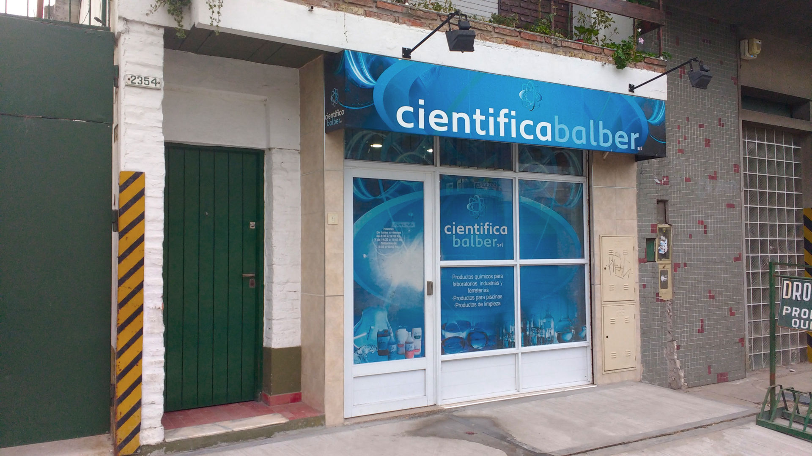

Siendo muy jóvenes, fundamos la empresa en el año 1978, y desde 1980 nos instalamos en la actual locación de
Andres Baranda 2354 de Quilmes. Fuimos creciendo como personas y como empresa, afianzándonos en el mercado local
en la producción y venta de productos de limpieza, piscinas, industriales y de laboratorio. Cada dia nos
esforzamos para que nuestros productos sean de la mejor calidad y a los mejores precios, con la particularidad
de la mejor atención personalizada. En la era digital nos distinguimos por estar allí en persona para ayudarlo a
resolver esas cuestiones sobre las que entendemos y aportar nuestro grano de arena en el cuidado del medio
ambiente.
